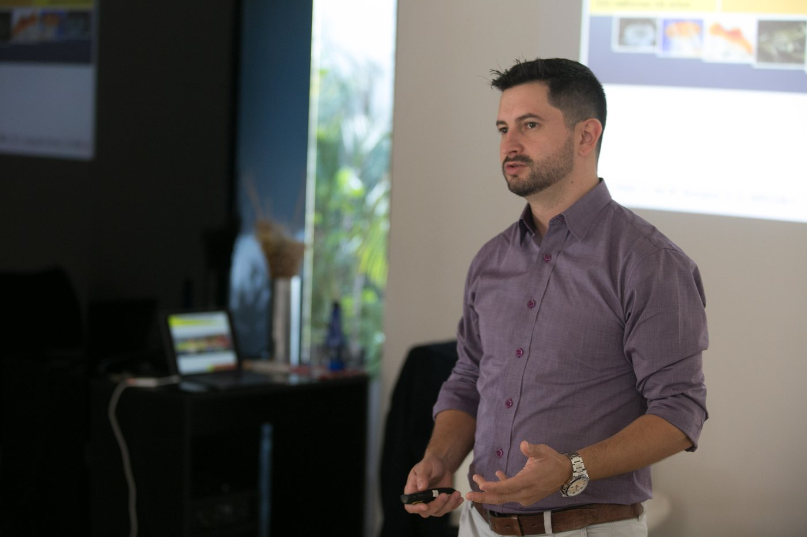
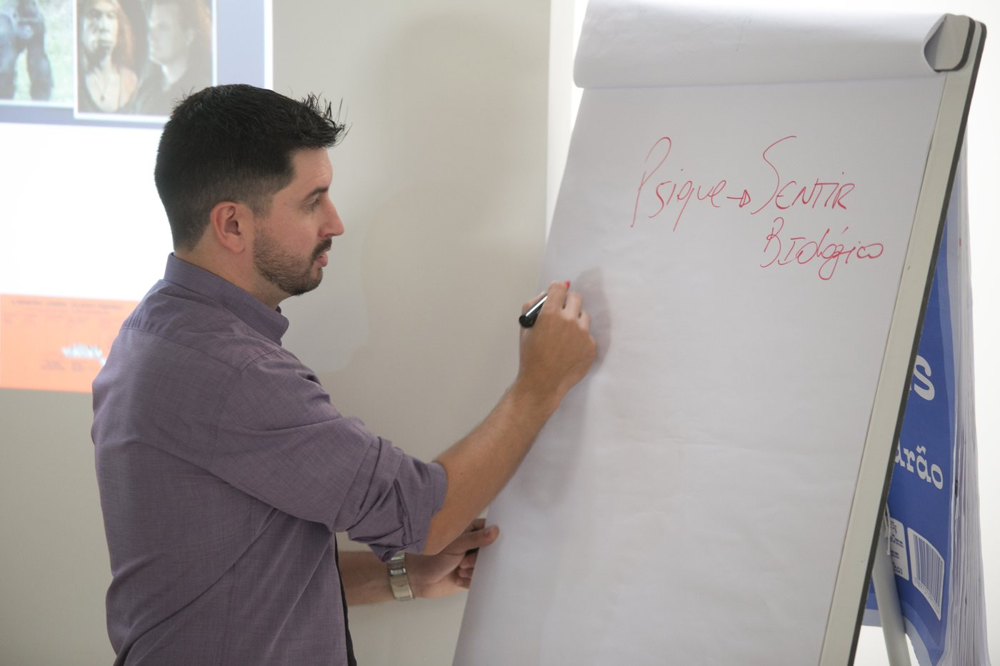
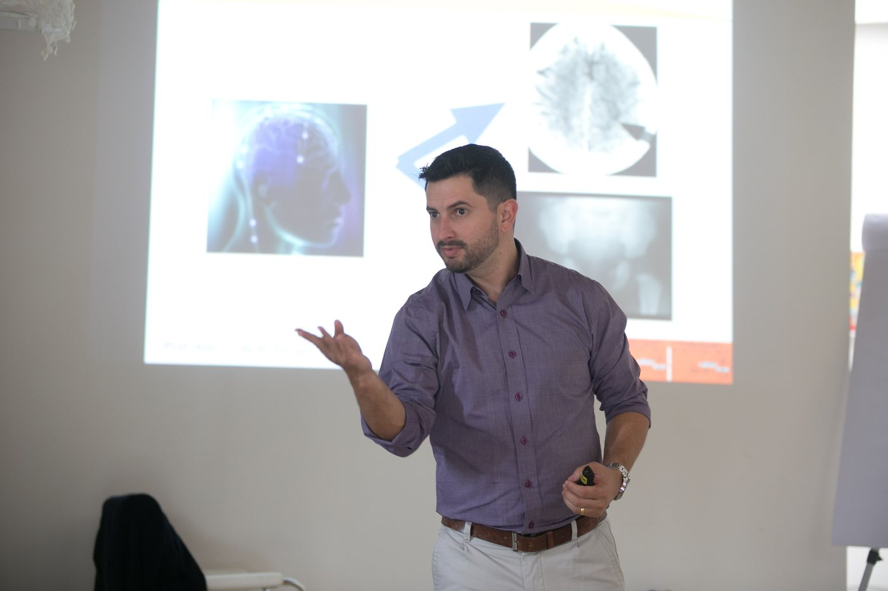

SIB — Nova Medicina Germânica em São Paulo: 25 a 28 de fevereiro de 2027
Quatro dias presenciais, das 9h às 18h, com Dr. Alan Borges — neurocientista e criador do Método SIB. As cinco leis biológicas da Nova Medicina Germânica e a leitura clínica do sintoma.

Próxima turma
São Paulo · SP — 25 a 28 de fevereiro de 2027
Quatro dias presenciais, de quinta a domingo, das 9h às 18h, com Dr. Alan Borges.
Vagas limitadas — a turma é fechada para manter a parte prática com número reduzido de participantes.
O que é a Nova Medicina Germânica
A Nova Medicina Germânica é um conjunto de princípios formulado pelo médico alemão Dr. Ryke Geerd Hamer no início dos anos 1980. A proposta central é ler o sintoma não como erro do corpo, mas como resposta biológica com propósito — a solução que o organismo encontrou para lidar com um evento que percebeu como ameaça.
Hamer organizou essa leitura em cinco leis biológicas. Elas são a base do que se estuda hoje como Nova Medicina Germânica, e são o conteúdo central desta formação.

As cinco leis biológicas
- 1. A Lei FérreaTodo programa biológico especial começa com um choque inesperado, dramático e vivido em isolamento — o que Hamer chamou de DHS. Esse choque se registra ao mesmo tempo em três níveis: na psique, em uma área específica do cérebro e no órgão correspondente. O conteúdo do conflito define qual órgão e qual área cerebral são afetados.
- 2. A lei bifásicaTodo programa, uma vez iniciado, percorre duas fases. A primeira é a fase ativa: o organismo em tensão, com predomínio do sistema nervoso simpático — insônia, perda de apetite, extremidades frias. Quando o conflito se resolve, entra a fase de reparação, agora com predomínio parassimpático: edema, febre, cansaço. É na segunda fase que a maioria dos sintomas físicos aparece.
- 3. O sistema ontogenéticoCada tecido responde de um jeito, de acordo com sua origem embrionária — o folheto germinativo a que pertence. Essa origem define qual área do cérebro controla aquele tecido e se ele vai proliferar ou perder células durante o programa. É a base do mapa órgão–cérebro usado na leitura.
- 4. O papel dos microrganismosBactérias, fungos e vírus não seriam a causa da doença, e sim participantes da fase de reparação, atuando na reconstrução do tecido. Isso inverte a leitura usual do processo infeccioso e febril.
- 5. O sentido biológicoTodo sintoma carrega um propósito inscrito na história evolutiva da espécie. Nada seria arbitrário: cada processo teria uma lógica de proteção, adaptação e sobrevivência. É a lei que dá nome ao método — SIB, Saúde Integrativa Biológica.

Ler não é tratar
A Nova Medicina Germânica é, antes de tudo, um modelo de leitura: uma forma de organizar a história do paciente e entender por que o corpo respondeu daquela maneira, naquele momento, naquele órgão.
Ela não é protocolo de tratamento e não substitui diagnóstico, exames, medicação ou acompanhamento médico. Quadros que exigem investigação continuam exigindo investigação. Essa distinção é parte do que se ensina — inclusive para reconhecer limites e saber quando encaminhar.
Quem trabalha com leitura biológica precisa de dois cuidados: não transformar o modelo em promessa de cura, e não abandonar o que a medicina oferece de concreto. É o que separa o profissional que soma do profissional que expõe o paciente a risco.
Por que isso muda o atendimento
Quando o sintoma passa a ser entendido como resposta e não como falha, a conversa com o paciente muda. Ele deixa de ser alguém "com um problema no joelho" e passa a ser alguém cujo corpo respondeu a algo — e essa resposta tem uma biografia.
Na prática, três ganhos: o paciente entende o próprio quadro e adere melhor; o profissional sai do protocolo pronto e ganha raciocínio; e os casos que voltam sempre passam a ter explicação, em vez de virarem frustração dos dois lados.
Quem ministra
Dr. Alan Borges é osteopata D.O — a mais alta titulação da área — e neurocientista, pesquisador do comportamento humano e criador do Método SIB — Saúde Integrativa Biológica. Palestrante em eventos nacionais e internacionais, foi premiado com o Top of Mind Brazil e preside o Registro Brasileiro dos Osteopatas (RBrO).
Fundador do Instituto Alan Borges, construiu o método a partir de mais de quinze anos de consultório. O conteúdo da formação nasce de casos reais, não de teoria de manual.
Investimento
10% de desconto
Pagamento à vista tem 10% de desconto sobre o valor da turma.
Em até 12x
O valor também pode ser dividido em até 12 vezes.
Os valores da turma são informados pela organização no contato abaixo.
Inscrições e informações
Valores, formas de pagamento, local e confirmação de vaga são passados diretamente no contato abaixo.
O Agnideva é a organização local da turma em São Paulo. Fale diretamente com ele para valores, formas de pagamento, local e confirmação de vaga.
Agnideva
Organização local · Telefone e WhatsApp
O que você vai aprender
- A base das cinco leis biológicas — o que cada uma afirma e como se aplicam na leitura de um caso
- O mapa órgão–cérebro — como a origem embrionária do tecido organiza a resposta do corpo
- Fase ativa e fase de reparação — por que o sintoma costuma aparecer quando o conflito se resolve
- Leitura da biografia — como organizar a história do paciente dentro do modelo
- Limites e segurança — o que a leitura biológica é e o que ela não é, e quando encaminhar
São Paulo · 25 a 28 de fevereiro de 2027
Fale com a organização para garantir sua vaga.